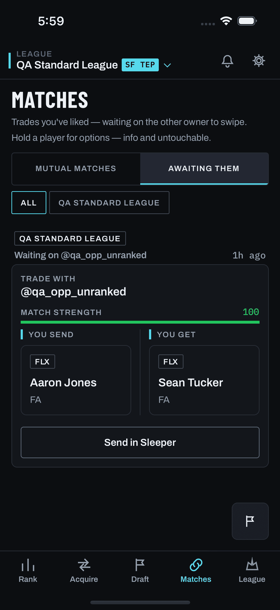

What this is. After a manager sends an offer, the app could hold one pre-built revision: the same core players, with the other manager's side improved by a bounded step (10–20% of the trade's market value), and proven valid by the same engine evaluator as any card. The backend for that revision is built and dark behind trade.next_move. Nothing in the app is built. This page asks you to pick how, or whether, it appears.
Why it was raised. In the Sleeper offer history, a first offer was accepted 8% of the time, and three-offer threads closed 39% of the time. The median counter moved the deal about 20 points of the trade's value toward the counterer, and 84% of counters reused an asset from the offer they answered. Your concern: "it has the risk to just invite haggling and ruin the value prop." Each treatment below says how it limits haggling and what that costs.
Recommendation and open questions
Recommend ARecommendation: A, restrained. It is the only treatment that leaves the suggestion card exactly as it is today, so the first offer still reads as the app's fair answer, not an opening bid. The revision appears only after the other manager has said no or gone quiet for 48 hours, which is when the offer history says a second offer helps. There is one revision per offer and never a revision of a revision, so the app cannot become a haggling ladder. I found no reason to prefer B or C given your concern. B tells the user on the card that the offer isn't final. C asks them to plan the concession before the first offer has been seen.
Open questions for you
- Which treatment, or none? A, B, C, or keep the flag off and drop it.
- One revision per offer, ever? I recommend yes: once a revision is sent, that offer gets no further next move.
- The step: 10–20% of the trade's value, at the engine's own package pricing. At that pricing a small filler is worth little, sometimes less than nothing to the receiver (roster spot), so the step is usually a real piece or a removed ask, not a throw-in. Keep the band?
- The trigger for A and B: "declined" needs WS2's outcome tracking (
trade.outcome_tracking). Until that is on, only "no reply in 48 hours since the app sent it" is knowable. Ship on silence alone first, or wait for WS2? - Where it lives. The app has no sent-offers list today. The nearest surface is Matches → Awaiting them, so A is drawn there. Is that right, or should it wait for the summary page in WS6's send-on-platform definition?
- The original offer in Sleeper. A revision is a new proposal. The original stays pending in Sleeper unless the user withdraws it there; the app cannot withdraw it today. Acceptable for a first version?
- How we would know it is hurting. Before turning it on, agree the measures: revisions sent per thread, acceptance of revisions against originals, and whether first offers are sent less often once revisions exist.
What the backend finds (synthetic leagues, real player values)
| Engine revision | Sent offers with a valid revision | Kind | Median step |
|---|---|---|---|
| Owner v1 | 50 / 80 (62%) | all add one asset (decks are 1-for-1) | 12.2% |
| Bilateral 1 | 5 / 80 (6%) | remove an asked-for piece | 12.4% |
| Bilateral 2 (live) | 17 / 80 (21%) | 12 remove, 5 add | 12.2% |
| Bilateral 3 | 13 / 80 (16%) | 6 remove, 7 add | 11.7% |
Eight 12-team leagues built from the 340-player fixture, the first ten deck cards each treated as sent. On the live revision most offers are already 2-for-1 or 1-for-2, and adding a fourth asset is not an organic shape, so about one sent offer in five would ever show a next move. Script: docs/plans/offer-learnings/measure_next_move.py.
Before — today's surfaces
real captures, 2026-08-10 buildThese are real captures from screens/: the suggestion card (trades/populated) and Matches → Awaiting them (matches/populated--awaiting). The screen library has been frozen since 2026-08-11 (D-056). Since then TradesScreen.tsx has had 55 commits and MatchesScreen.tsx 14 (the push-arrival scroll, the invite controls), so the captures show that build, not today's app. Every proposed frame below is a hand-drawn reconstruction in Chalkline tokens, labelled as one, with the captures' players kept.
Capture · suggestion card

The card every treatment starts from.
Capture · Matches, awaiting them

The nearest surface to a sent-offers list.
Restrained — after a no or 48 hours of silence
RecommendedReconstruction · suggestion card
No change. Nothing on the card mentions a next move.
Reconstruction · awaiting, 48 h quiet
Reconstruction · after sending
How it limits haggling
The user never sees a concession before the other manager has answered, so the first offer stays the app's fair, complete suggestion. The revision appears only after a no or two days of silence. It is one pre-built revision with no editing and no second round, and it says exactly what changed.
What it costs
It is slow by design: two days, or a recorded decline (which needs WS2). Few users will see it. On the live engine about one sent offer in five has a valid revision. It needs a home on the Awaiting them tab, which today only lists liked trades. And the original stays pending in Sleeper beside the revision.
Visible but passive — an "If they pass" line
Reconstruction · suggestion card
One quiet line, no control. It only names the asset.
Reconstruction · awaiting, after a pass
How it limits haggling
It shows one named asset with no control, so the line can't be acted on early. The action appears only once the offer is answered, and as in A there is one revision and no editing.
What it costs
It says on the card that the offer isn't final, which is the value-prop risk you named. A user who reads "if they pass, add a 2nd" may start to see every suggestion as an opening bid, or send the bigger version first. The engine has to evaluate a revision for every card before the deck is shown, at about 30 ms per card on the live revision. Most cards would show no line, so the presence or absence of the line becomes a signal of its own.
Full — the next move as a second tap before sending
Reconstruction · sending from the card
If they pass, follow up with:
Reconstruction · awaiting, after a pass
How it limits haggling
Barely. The revision is still one pre-built step with no editing, and it is still bounded by the engine. Everything else is open: the concession is planned before the first offer is seen.
What it costs
Every send becomes two decisions, which slows the flow you want quick. It frames each suggestion as round one of a negotiation, which is the haggling risk at its strongest. It is also the easiest way to send the bigger offer first. It adds a sheet to a send path that is already platform-specific across Sleeper, ESPN and MFL.
The rule behind every frame
backend built, dark- Core kept. The most valuable asset on each side never leaves the offer.
- One change. Either add one asset from your roster (never one of your untouchables), or remove one of the extra pieces you asked for.
- A valid trade or nothing. The revision passes the same engine checks as any card for the engine in force: the market floor and overpay ceiling, both managers' benefit (yours included), untouchables, earlier passes and the trade-size rules.
- Bounded. The other manager gains 10–20% of the trade's value at the engine's own pricing. The smallest step that qualifies is chosen.
- At most one. No revision is offered when none qualifies.
Comments live only in this browser's localStorage until you export. Export produces a Markdown file (and copies it to the clipboard). Proposed frames are reconstructions, not captures; the asset added in them (a 2026 2nd) is illustrative, not a computed revision for these two players.